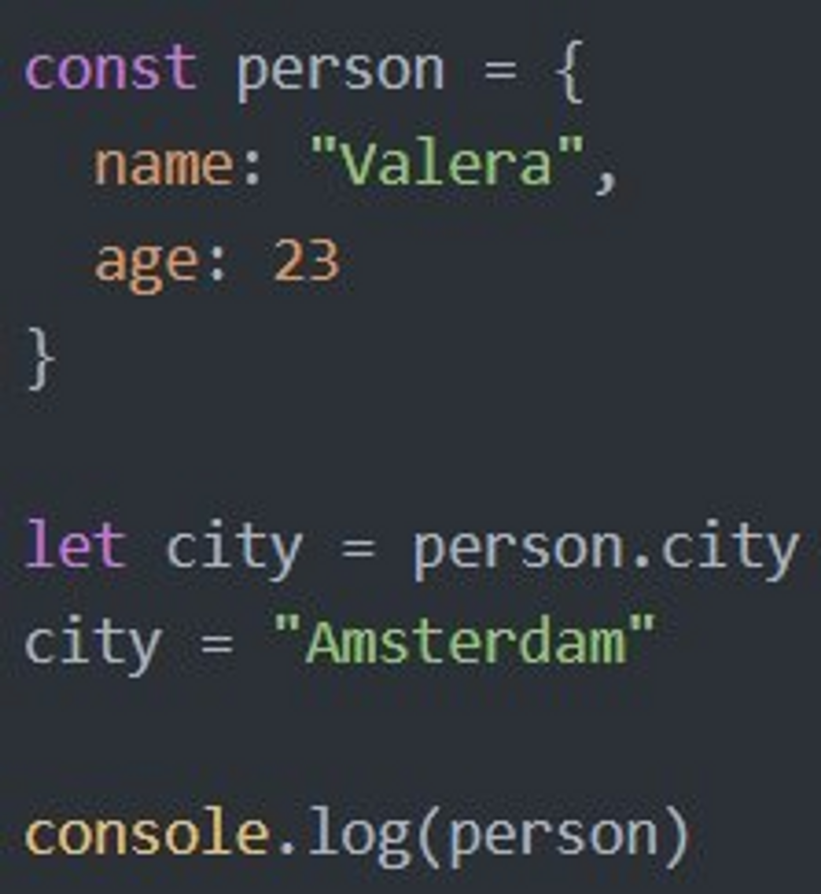

Ответ:
Объект - это тип данных, который может содержать коллекции различных свойств и других более сложных структур.
Данные чаще всего объединены общим смыслом, что позволяет оперировать объектом, как единым целым.
Свойства в свою очередь имеют имя и значение, что позволяет изменять их, извлекать, удалять или создавать новые.
Класс — это «чертеж» объекта.
Это расширяемый шаблон кода для создания объектов, который устанавливает в них начальные значения (свойства) и реализацию поведения (методы).
Это одна из функций, появившихся в версии ES6 JavaScript.
Ответ:
Ответ:
Конструктор (функция-конструктор) – это функция, посредством которой в JavaScript можно создавать объекты.
Функция-конструктор вызывается с использованием ключевого слова new.
Чтобы данную функцию можно было отличить от обычной функции, ей назначают имя, начинающееся с большой буквы.
В JavaScript есть два типа конструкторов:
Это легкодоступные конструкторы, которые поставляются в комплекте со средой исполнения. Пользователь просто должен вызвать их и альт, работа сделана. Примерами встроенных конструкторов являются: new Object(), new Array(), new String(), new Number(), new Date() и другие.
Это конструкторы, объявленные и определенные программистом для использования в приложении. Программист также может определять свойства и методы своих собственных пользовательских типов.
Ответ:
При вызове функции bike() в консоль выведется ninja, так как в функциию попадает значение из переменной name.
При вызове функции obj1.bike() в консоль выведется pomidor, так как это значение свойства name в объекте obj1, который мы передаем в функцию.
При вызове функции obj2.bike() в консоль выведется site, второй объект попадает в функцию аналогично предыдущему.
Ответ:
Статические свойства не требуют написания new при создании объектов, но требуют указания Static для задания свойств.
Статические методы полезны, если у вас есть только один экземпляр, в котором вы собираетесь использовать этот метод, и вам не нужны несколько копий (объектов).
Нестатические методы используются, если вы собираетесь использовать свой метод для создания нескольких копий.
Ответ:
Свойства-аксессоры представлены методами: «геттер» – для чтения и «сеттер» – для записи. При литеральном объявлении объекта они обозначаются get и set.
Ответ:
typeOf показывает тип данных, в данном случае это - объект.

Ответ:
Через console.log(person) мы непосредственно обращаемся к объекту person.
Выведется имя и возраст записанные в объекте.